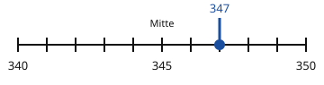

Runden
Mit einem KI-Tutor lernen
Ein KI-Tutor erklärt dir diese Seite und hilft dir bei den Aufgaben. Wähl deinen Assistenten:
Mit Claude öffnen Mit ChatGPT öffnen Mit Mistral Vibe öffnen
Du nutzt dein eigenes Konto beim Anbieter. Der Assistent ist kein Angebot von lernapps.net: lernapps liefert nur Inhalte und Aufgaben. Die Wahl gilt für alle Seiten, nur auf diesem Gerät.
Was du hier lernst
Eine Zeitung schreibt: „Die Strecke ist etwa 350 km lang.“ Genau sind es 347 km. Du baust auf der Stellenwerttafel auf. Nach dieser Seite kannst du eine Zahl auf eine Stelle runden und entscheiden, wie genau eine Zahl sein muss.
Aufgabe
Lösung
Richtige Antwort: 350
347 liegt zwischen 340 und 350. Bis 350 sind es 3, bis 340 sind es 7. Also ist 350 näher.
Die Mitte entscheidet
Wenn du nicht jede Einerziffer brauchst, rundest du. Beim Runden gehst du zum nächsten vollen Zehner, Hunderter oder Tausender. Wenn eine Zahl zwischen zwei runden Zahlen liegt, entscheidet, welche näher ist. Schau auf die Ziffer rechts von der Stelle, auf die du rundest: Bei 0, 1, 2, 3, 4 rundest du ab, bei 5, 6, 7, 8, 9 rundest du auf.

© CC0-1.0347 liegt rechts von der Mitte 345. Deshalb rundest du auf 350.
- Runden
Runden heißt, eine Zahl durch die nächstgelegene runde Zahl zu ersetzen, zum Beispiel durch den nächsten vollen Zehner. Liegt sie genau in der Mitte, rundest du auf.
Beispiel
Auf welche Stelle runden?
Ein Ort hat 48 237 Einwohner. Eine Zeitung rundet auf Tausender: 48 000. Eine Schulbehörde braucht es genauer und rundet auf Hunderter: 48 200. Wie genau eine Zahl sein muss, hängt von der Aufgabe ab.
Übung
Aufgabe
Drei Beispielaufgaben, jede mit ihrer Lösung:
Aufgabe Nr. 1
Runde 567 auf Zehner.
Tipp
Schau auf die Einerziffer: Ab 5 wird aufgerundet.
Lösung
Richtige Antwort: 570
Aufgabe Nr. 2
Runde 146 auf Zehner.
Tipp
Schau auf die Einerziffer: Ab 5 wird aufgerundet.
Lösung
Richtige Antwort: 150
Aufgabe Nr. 3
Runde 316 auf Zehner.
Tipp
Schau auf die Einerziffer: Ab 5 wird aufgerundet.
Lösung
Richtige Antwort: 320
Aufgabe
Drei Beispielaufgaben, jede mit ihrer Lösung:
Aufgabe Nr. 1
Runde 233 auf Zehner.
Tipp
Schau auf die Einerziffer: Bei 1 bis 4 wird abgerundet.
Lösung
Richtige Antwort: 230
Aufgabe Nr. 2
Runde 422 auf Zehner.
Tipp
Schau auf die Einerziffer: Bei 1 bis 4 wird abgerundet.
Lösung
Richtige Antwort: 420
Aufgabe Nr. 3
Runde 562 auf Zehner.
Tipp
Schau auf die Einerziffer: Bei 1 bis 4 wird abgerundet.
Lösung
Richtige Antwort: 560
Aufgabe
Lösung
Richtige Antwort: 2500
Die Ziffer rechts von der Hunderterstelle ist 5. Bei 5 rundest du auf: 2500.
Aufgabe
Lösung
auf 190 km richtige Antwort
Für die Planung reicht ein voller Zehner.
auf 200 km
Das ist die Rundung auf Hunderter. Gefragt war ein voller Zehner.
auf 0 km
Das ist die Rundung auf Tausender. Sie ist viel zu grob: Mit 0 km lässt sich keine Fahrt planen.
Du rundest so, dass die Zahl noch zum Zweck passt: nicht ungenauer als nötig, nicht genauer als sinnvoll.
Fehler gefunden oder eine Idee für diese App?